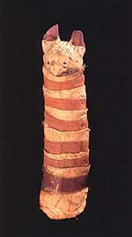

spatial research
How much information can we associate with a region of space, for example, for a cat mummy shaped region? What sense can we give to the notion that the cat mummy can hold information, say 35 bits of information?

Here we are really interested in a volume of space whose boundary is of a given shape (the surface of the cat mummy). Further we don't really want the cat mummy to be there but rather just empty space. So the questions is: Can a region of empty space hold information? If it does hold information then it is like a type of spatial RAM. Further how does the spatial RAM capacity depend on the volume and shape of the spatial region?
A related communication problem then becomes: Given we have two cat mummy shaped regions (which a certain orientation and separation) that want to communicate, what is the capacity of the volume to volume channel?
Properly incorporating continuous space into a classical time dominated signal processing framework opens up such interesting questions. Just as we regard intervals of time and intervals of frequency (finite bandwidth) as critical resources for sensors and communications we can also value intervals of space (being bounded regions of potentially arbitrary shape/volume).
The resolution of these problems is under active investigation which a number of results already obtained.
R. A. Kennedy, P. Sadeghi, T. D. Abhayapala, and H. M. Jones,
"Intrinsic limits of dimensionality and richness in random multipath fields",
IEEE Trans. Signal Processing,
vol. 55,
no. 6,
pp. 2542-2556,
June
2007.
Official: Link
DOI: 10.1109/TSP.2007.893738
PDF: 04203083.pdf
Google-Scholar: [7]
Abstract: We study the dimensions or degrees of freedom of farfield multipath that is observed in a limited, source-free region of space. The multipath fields are studied as solutions to the wave equation in an infinite-dimensional vector space. We prove two universal upper bounds on the truncation error of fixed and random multipath fields. A direct consequence of the derived bounds is that both fixed and random multipath fields have an effective finite dimension. This finite dimension is linearly proportional to the radius of the two-dimensional spatial region where the field is coupled to. We use the Karhunen-Loeve (KL) expansion of random multipath fields to quantify the notion of multipath richness. The multipath richness is defined as the number of significant eigenvalues in the KL expansion that achieves 99\% of the total multipath energy. We prove a lower bound on the largest multipath eigenvalue and use this bound to show that reducing the angular range of multipath power spectrum reduces multipath richness. We also provide a systematic numerical algorithm to find multipath eigenvalues, which unlike the Fredholm equation, does not require selecting quadrature points.
@article{KennedyJ2007c,
title = {Intrinsic limits of dimensionality and richness in random multipath fields},
author = {Kennedy, R. A. and Sadeghi, P. and Abhayapala, T. D. and Jones, H. M.},
journal = {IEEE Trans. Signal Processing},
volume = {55},
pages = {2542-2556},
month = {June},
year = {2007}}
T. S. Pollock, T. D. Abhayapala, and R. A. Kennedy,
"Introducing Space into MIMO Capacity Calculations",
Journal on Telecommunications Systems,
vol. 24,
no. 2,
pp. 415-436,
October
2003.
Official: Link
DOI: 10.1023/A:1026143603179
PDF: KennedyJ2003a.pdf
Google-Scholar: [25]
Abstract: The large spectral efficiencies promised for multiple-input multiple-output (MIMO) wireless fading channels are derived under certain conditions which do not fully take into account the spatial aspects of the channel. Spatial correlation, due to limited angular spread or insufficient antenna spacing, significantly reduces the performance of MIMO systems. In this paper we explore the effects of spatially selective channels on the capacity of MIMO systems via a new capacity expression which is more general and realistic than previous expressions. By including spatial information we derive a closed-form expression for ergodic capacity which uses the physics of signal propagation combined with the statistics of the scattering environment. This expression gives the capacity of a MIMO system in terms of antenna placement and scattering environment and leads to valuable insights into the factors determining capacity for a wide range of scattering models.
@article{KennedyJ2003a,
title = {Introducing Space into {MIMO} Capacity Calculations},
author = {Pollock, T. S. and Abhayapala, T. D. and Kennedy, R. A.},
journal = {Journal on Telecommunications Systems},
volume = {24},
pages = {415-436},
month = {October},
year = {2003}}
T. D. Abhayapala, T. S. Pollock, and R. A. Kennedy,
"Characterization of 3D Spatial Wireless Channels",
IEEE Vehicular Technology Conference (Fall), VTC(Fall) 2003,
vol. 1,
pp. 123-127,
October
2003.
Official: Link
PDF: 01284991.pdf
Google-Scholar: [12]
Abstract: In this paper a novel three dimensional spatial channels model is developed to provide insight into spatial aspects of multiple antenna communication systems. The spherical harmonic representation of wavefields is used to decompose the spatial channel matrix into a product of known and random matrices where the known portion shows the effects of the physical configuration of antenna elements. The model supports any arbitrary antenna array configurations as well as any distribution of scatterers. Possible applications of the model and its usefulness are outlined.
@inproceedings{KennedyC2003n,
title = {Characterization of {3D} Spatial Wireless Channels},
author = {Abhayapala, T. D. and Pollock, T. S. and Kennedy, R. A.},
booktitle = {IEEE Vehicular Technology Conference (Fall), VTC(Fall) 2003},
volume = {1},
pages = {123-127},
month = {October},
year = {2003}}
T. D. Abhayapala, T. S. Pollock, and R. A. Kennedy,
"Spatial Decomposition of MIMO Wireless Channels",
Proc. Seventh International Symposium on Signal Processing and its Applications, ISSPA'03,
vol. 1,
pp. 309-312,
July
2003.
Official: Link
DOI: 10.1109/ISSPA.2003.1224702
PDF: 01224702.pdf
Google-Scholar: [24]
Abstract: In this paper a novel decomposition of spatial channels is developed to provide insight into spatial aspects of multiple antenna communication systems. The underlying physics of the free space propagation is used to model the channel in scatterer free regions around the transmitter and the receiver, and the rest of the complex scattering media is represented by a parametric model. The channel matrix is separated into a product of known and random matrices where the known portion shows the effects of the physical configuration of antenna elements. We use the model to show the intrinsic degrees of freedom in a multiantenna system. Potential applications of the model are briefly discussed.
@inproceedings{KennedyC2003m,
title = {Spatial Decomposition of {MIMO} Wireless Channels},
author = {Abhayapala, T. D. and Pollock, T. S. and Kennedy, R. A.},
booktitle = {Proc. Seventh International Symposium on Signal Processing and its Applications, ISSPA'03},
volume = {1},
pages = {309-312},
month = {July},
year = {2003}}
R. A. Kennedy and T. D. Abhayapala,
"Spatial Concentration of Wave-Fields: Towards Spatial Information Content in Arbitrary Multipath Scattering",
Proc. 4th Australian Communications Theory Workshop,
pp. 38-45,
February
2003.
PDF: KennedyC2003b.pdf
Google-Scholar: [16]
Abstract: The fundamental limitation of using a spatial channel as an information bearing resource is considered. Such theoretical foundations are largely absent in the development of wireless communication systems which unduly focus on implementation and as a consequence there are a number of misconceptions and mal-implementations of communication systems which employ the MIMO principle. The notion of essential dimensionality of spatial systems is examined in detail for the case of a spherical region in three dimensional space in a nearfield scattering environment as a pointer to a more general theory nearing completion. A non-trivial but tight analogy is drawn with the classical work on time-frequency concentration and the dimensionality of essentially time- and band-limited signals by Slepian, Landau and Pollack.���
���
@inproceedings{KennedyC2003b,
title = {Spatial Concentration of Wave-Fields: Towards Spatial Information Content in Arbitrary Multipath Scattering},
author = {Kennedy, R. A. and Abhayapala, T. D.},
booktitle = {Proc. 4th Australian Communications Theory Workshop},
pages = {38-45},
month = {February},
year = {2003}}
T. S. Pollock, T. D. Abhayapala, and R. A. Kennedy,
"Fundamental Limits of MIMO Capacity for Spatially Constrained Arrays",
Proc. 4th Australian Communications Theory Workshop,
pp. 7-12,
February
2003.
PDF: KennedyC2003a.pdf
Google-Scholar: [13]
Abstract: In this paper we investigate the capacity behavior of spatial constrained multiple-antenna array communications. By increasing the number of antennas within a fixed region of space the antenna array becomes dense and spatial correlation inhibits capacity growth. Using a novel spatial channel model we show that the underlying physics of wave propagation limits the capacity of constrained arrays. A theoretically derived antenna saturation point is shown to exist for dense array MIMO systems, at which there is no capacity growth with increasing antenna numbers. We show this saturation point increases linearly with the radius of the region, and that it naturally lends itself to a definition for the theoretical maximum capacity for a fixed region of space.
@inproceedings{KennedyC2003a,
title = {Fundamental Limits of {MIMO} Capacity for Spatially Constrained Arrays},
author = {Pollock, T. S. and Abhayapala, T. D. and Kennedy, R. A.},
booktitle = {Proc. 4th Australian Communications Theory Workshop},
pages = {7-12},
month = {February},
year = {2003}}
T. S. Pollock, T. D. Abhayapala, and R. A. Kennedy,
"Introducing 'Space' into Space-Time MIMO Capacity Calculations: A New Closed Form Upper Bound",
Proc. Int. Conf. Telecommunications, ICT'03,
vol. 2,
pp. 1536-1541,
February
2003.
Official: Link
DOI: 10.1109/ICTEL.2003.1191662
PDF: 01191662.pdf
Google-Scholar: [9]
Abstract: We present a new upper bound on capacity for multiple-input multiple-output (MIMO) wireless fading channels which is more general and realistic than previous capacity expressions. By including spatial information at the antenna arrays we derive a closed form upper bound on capacity which uses the physics of signal propagation combined with statistics of the scattering environment. This expression gives the capacity of a MIMO system in terms of antenna placement and scattering environment and leads to valuable insights into the factors determining capacity for a wide range of scattering models.
@inproceedings{KennedyC2003f,
title = {Introducing 'Space' into Space-Time {MIMO} Capacity Calculations: A New Closed Form Upper Bound},
author = {Pollock, T. S. and Abhayapala, T. D. and Kennedy, R. A.},
booktitle = {Proc. Int. Conf. Telecommunications, ICT'03},
volume = {2},
pages = {1536-1541},
month = {February},
year = {2003}}
P. D. Teal, T. D. Abhayapala, and R. A. Kennedy,
"Spatial Correlation for General Distributions of Scatterers",
IEEE Signal Processing Letters,
vol. 9,
no. 10,
pp. 305-308,
October
2002.
Official: Link
DOI: 10.1109/LSP.2002.804138
PDF: 01043864.pdf
Google-Scholar: [45]
Abstract: The well-known results of the spatial correlation function for two-dimensional and three-dimensional diffuse fields of narrowband signals are generalized to the case of general distributions of scatterers. A method is presented that allows closed-form expressions for the correlation function to be obtained for arbitrary scattering distribution functions. These closed-form expressions are derived for a variety of commonly used scattering distribution functions.
@article{KennedyJ2002b,
title = {Spatial Correlation for General Distributions of Scatterers},
author = {Teal, P. D. and Abhayapala, T. D. and Kennedy, R. A.},
journal = {IEEE Signal Processing Letters},
volume = {9},
pages = {305-308},
month = {October},
year = {2002}}
H. M. Jones, R. A. Kennedy, and T. D. Abhayapala,
"On Dimensionality of Multipath Fields: Spatial Extent and Richness",
Proc. IEEE Int. Conf. Acoust., Speech, Signal Processing, ICASSP'2002,
vol. III,
pp. 2837-2840,
May
2002.
Official: Link
DOI: 10.1109/ICASSP.2002.1005277
PDF: 01005277.pdf
Google-Scholar: [58]
Abstract: We establish that an arbitrary narrowband multipath field in any circular region in two dimensional space has an intrinsic functional dimensionality of (/spl pi/e)R//spl lambda/, /spl ap/8.54R//spl lambda/, that scales only linearly with radius R/spl bsol//spl lambda/ in wavelengths. This result implies that there is no such thing as an arbitrarily complicated multipath field. That is, a field generated by any number of nearfield and farfield, specular and diffuse, multipath reflections is no more complicated than a field generated by a limited number of plane waves. As such, there are limits on how rich multipath can be. This result has significant implications including: i) means to determine a parsimonious parameterization for arbitrary multipath fields; ii) means of synthesizing arbitrary multipath fields with arbitrarily located nearfield or farfield, spatially discrete or continuous sources. We give examples of multipath field analysis and synthesis.
@inproceedings{KennedyC2002g,
title = {On Dimensionality of Multipath Fields: Spatial Extent and Richness},
author = {Jones, H. M. and Kennedy, R. A. and Abhayapala, T. D.},
booktitle = {Proc. IEEE Int. Conf. Acoust., Speech, Signal Processing, ICASSP'2002},
volume = {III},
pages = {2837-2840},
month = {May},
year = {2002}}
R. A. Kennedy, T. D. Abhayapala, and H. M. Jones,
"Bounds on the Spatial Richness of Multipath",
Proc. 3rd Australian Communications Theory Workshop, AusCTW'2002,
pp. 76-80,
February
2002.
PDF: KennedyC2002b.pdf
Google-Scholar: [10]
Abstract: In this paper wireless multipath fields are modelled using classes of orthogonal functional expansions based on the solutions to the Helmholtz (wave) equation. These expansions permit a multipath field --- generated by any number of nearfield, farfield, specular and diffuse multipath reflections---to be modelled to any precision in a region of interest. Two expansions are provided, one suitable for multipath fields which show no variation with height, and the other suitable for general 3D fields. We establish that the dimensionality of the functional expansion, and thereby the multipath field, scales with the size of the boundary of the region in space. When the region of interest is small in wavelengths, typical of antenna arrays apertures in practice, then the multipath field can be modelled by only a small number, given by the dimensionality, of arbitrarily located sources. Multipath field synthesis can be done using combinations of arbitrarily located distinct farfield, nearfield, point and spatially distributed sources. These results establish rigorous bounds on the spatial richness of multipath.
@inproceedings{KennedyC2002b,
title = {Bounds on the Spatial Richness of Multipath},
author = {Kennedy, R. A. and Abhayapala, T. D. and Jones, H. M.},
booktitle = {Proc. 3rd Australian Communications Theory Workshop, AusCTW'2002},
pages = {76-80},
month = {February},
year = {2002}}